Mahoning Valley Electric Company in Niles Ohio

Location of the Mahoning

Photo of one building of the Niles Car & Manufacturing Co. taken from atop the water tower in the early 1900's.

The outside of the Niles Car building with the name above the building.
{kind=link}
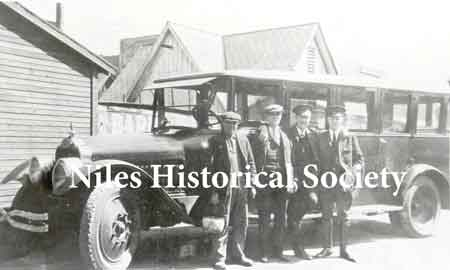
The Niles Car barn bus belonged to the Mahoning Valley Electric Railway Co. It was used to take the "track-walkers" out to remote areas, where they would walk along the tracks with a bucket of sand.

Water car- most roads were dirt and this car was used to water down roadway along streetcar tracks to fulfill safety regulations in effect in the 1890's and 1900's and to keep down dust since during dry weather any traffic caused clouds of dust.
{kind=link}
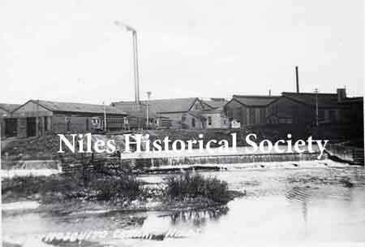
The car barns were located on the west side of Mosquito Creek just above the dam. The entrance to the barns was off Robbins Avenue.
{kind=link}
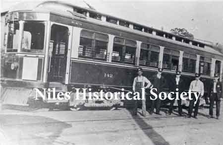
Streetcar-1907. This photo of employees of the Mahoning Valley Railway Co. was taken in Niles.
{kind=link}
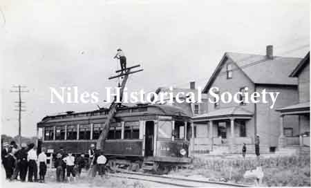
Streetcar wreck on Robbins Avenue near McKinley Heights.
{kind=link}
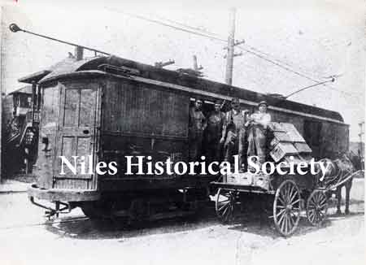
Freight car. All streetcars were not passenger cars. Some were used to haul freight, as in this picture — beer.
{kind=link}
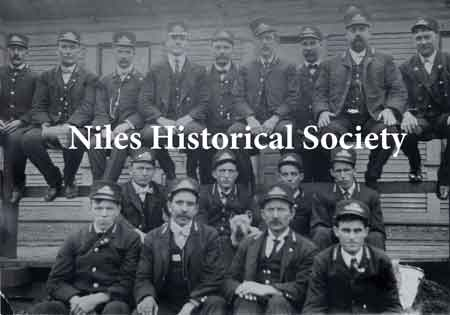
Streetcar motormen from the Mahoning Valley Electric Railway Company of Niles. In the back row, second from the left is Roy Swegans and the third from the right is John Curry.

At the car barns, the 'Limited' cars were

Mr. C. E. Rose, secretary and treasurer of Niles Car & Manufacturing Co. at his desk in the company office about 1912
{kind=link}
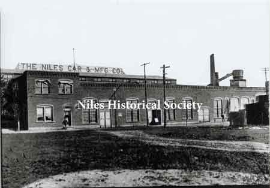
Erie Street view of the Niles Car & Manufacturing Co., makers of one of the finest lines of plush electric cars of the area

Inside the Niles Car & Manufacturing Co. about 1915 when the streetcars were being phased out and truck chassis were being built.
{kind=link}
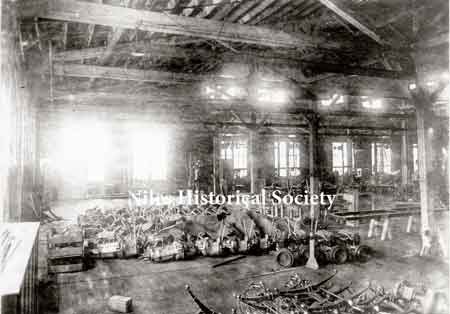
Inside the Niles Car & Manufacturing Co. about the time that conversion to truck bodies began.
{kind=link}
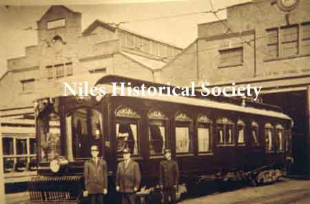
The interurban car, "The Northern" at the Niles station streetcar barns.

This shows the inside look of the Northern Car made by the Niles Car Co.
{kind=link}
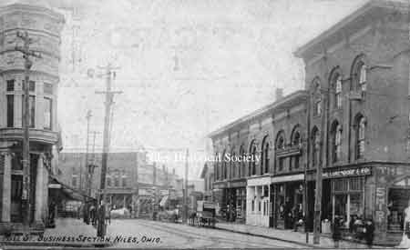
Mill Street, now State Street by the Police-Fire Complex, looking west with the streetcar running.

Furnace Street, now State Street, in

Main Street looking south about 1920 with the streetcar running.
{kind=link}
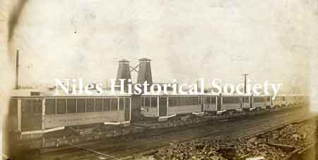
Six interurban cars shipped to Brandon Municipal in Manitoba, Canada.

Chicago Aurora & Elgin Car # 308. Built by the Niles Car & Manufacturing Co. in 1906.

Chicago Aurora & Elgin Car # 308. Built by the Niles Car & Manufacturing Co. in 1906.
{kind=link}
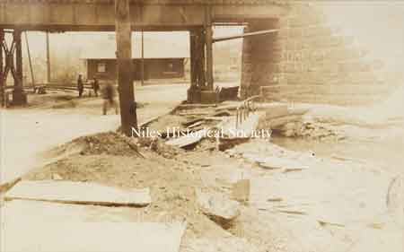
View of Niles Waiting Station looking through the Erie Railroad underpass.
{kind=link}
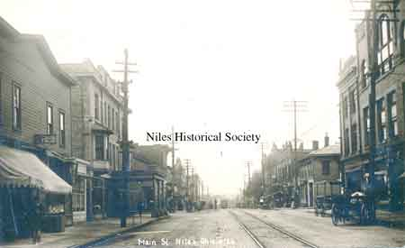
Looking South on Main Street, Niles, Ohio
{kind=link}
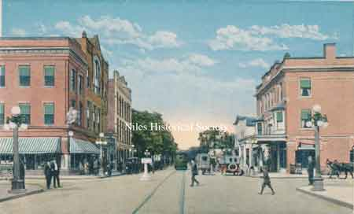
Main Street and Park Avenue Intersection.
{kind=link}
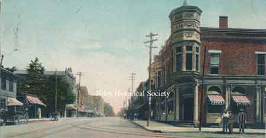
Main and Mill(State) Streets Intersection.
{kind=link}
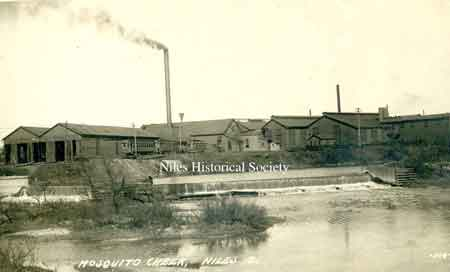
Car Barn and Mosquito Creek Dam.

Street Car Conductors at Car Barn.
{kind=link}
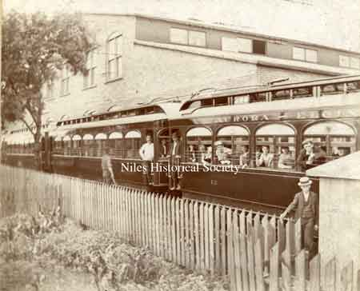